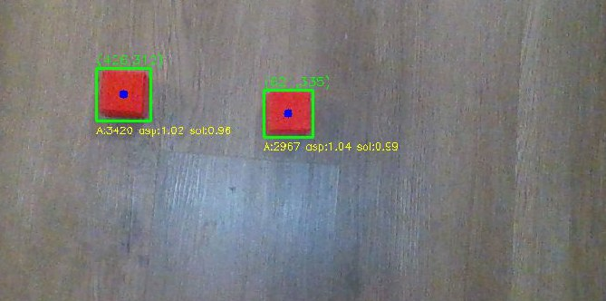
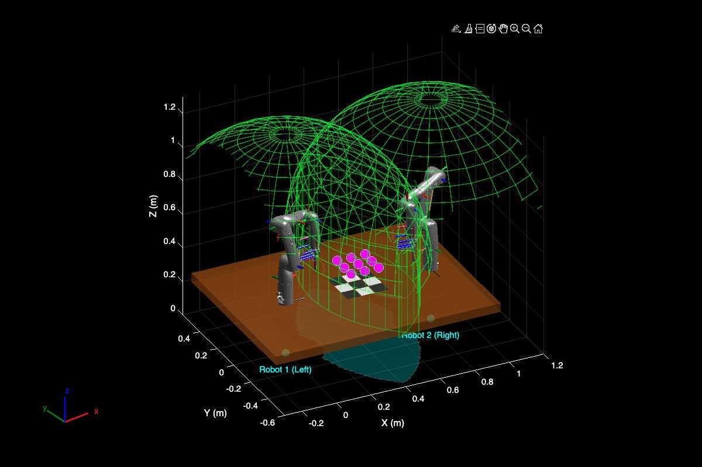
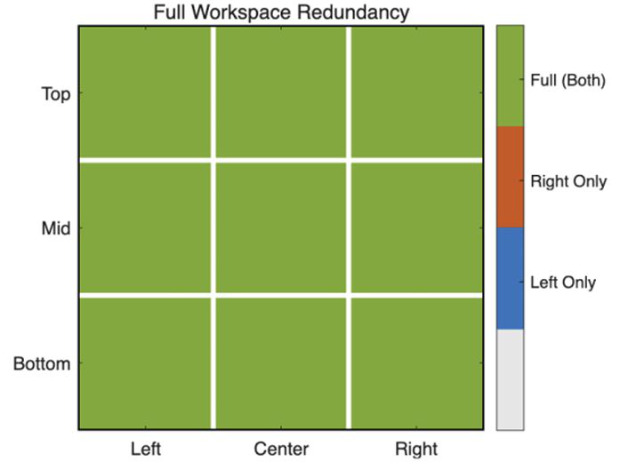

Two Kinova Gen3 Lite arms play a full game autonomously (16× speed).
Overview
I built a dual-arm robot that plays Tic-Tac-Toe on its own, using ROS 2, an RGB-D camera and MoveIt 2 on two Kinova Gen3 Lite arms.
The system covers the full pipeline: it sees the board, decides each move, plans the motion and picks and places pieces on real hardware.
The two arms play opposite colors and take turns, each one choosing its move from the current board state.
~90%
Task success in Gazebo
~50%
Task success on real arms
2 arms
Kinova Gen3 Lite, taking turns
System
ROS 2 system. Each arm runs in its own namespace; a mutex keeps the two arms out of the shared zone at the same time.
Perception. A fixed overhead RGB-D camera detects pieces by color in the RGB image, then uses depth and the point cloud
to get each piece's 3D position. A coordinate transform maps it into the base frame of the arm that will pick it.
Decision. A rule-based Tic-Tac-Toe player in Python reads the detected 3×3 board, finds the legal cells,
and picks a move that takes a winning cell when one exists or blocks the opponent's win.
Grasp and place poses. The pieces have a fixed shape, so instead of a general grasp planner I predefined the grasp height
and end-effector orientation and combined them with the detected position to get the grasp pose. The nine place poses on the board are predefined.
Motion planning. The Python program calls MoveIt 2, which handles IK, path planning and collision checking.
The arm executes the pick-and-place only if planning succeeds; otherwise the action is skipped.
Dual-arm coordination. Both arms run under their own ROS 2 namespaces (/left_arm, /right_arm).
The stock Kinova description could not bring up two arms because of joint-name collisions, so I generated the URDF from Xacro and injected
the fixed XML where needed. Picking regions are split by side, and a MutexNode lets only one arm enter the shared board zone at a time
while the other retracts to a safe pose.
Closed loop. ROS 2 connects the camera, decision and planning modules. After every move the camera re-reads the board
before the next decision, closing the loop at the task level.

Piece detection on the camera image. Each blob is filtered by area, aspect ratio (0.9–1.15) and solidity before its centroid (blue) is used.
The same pipeline in Gazebo simulation (2× speed).
Workspace analysis
Before running anything on hardware, I checked in MATLAB that the shared workspace was both reachable and safe. I replicated the two arm
placements, sampled the task space at all nine board cells, solved inverse kinematics for both arms, and measured the clearance between
the active arm's target pose and the passive arm's reachable workspace.
Full redundancy. Every cell is reachable by both arms, so there are no left-only, right-only or unreachable cells.
Large safety margins. Clearance ranges from 0.36 m to 0.52 m, well above the 0.15 m threshold.


Left: the two arms' reachable workspaces (green) overlap over the board. Right: all nine cells are reachable by both arms.
Lessons learned
The system reached about 90% task success in Gazebo and about 50% on the real arms. On hardware, most failures came from
camera calibration error, visual noise, and the table color interfering with piece detection. These errors shift the final grasp position,
so a grasp can miss even when MoveIt 2 plans and executes correctly. Perception accuracy, not planning, was the bottleneck in going from simulation to the real robot,
even though the real setup reused the exact same code, board layout and camera TF as the simulation.
The top-down grasp works because the pieces are regular blocks. For irregular objects I tried GraspNet, which gives full 6-DoF grasp poses;
it ran in MuJoCo simulation, but integrating it with the ROS 2 stack is left for future work.